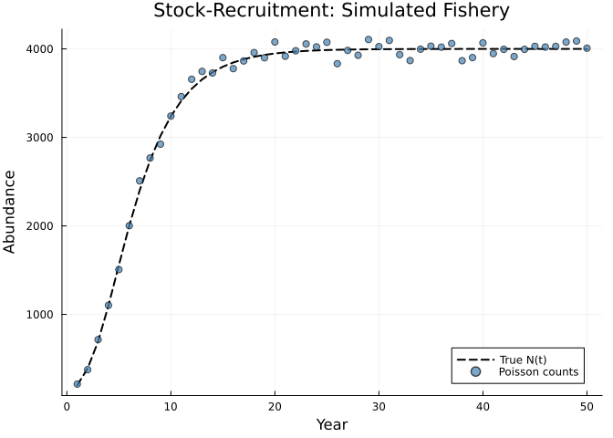
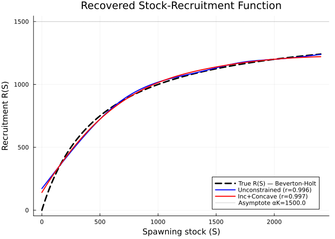
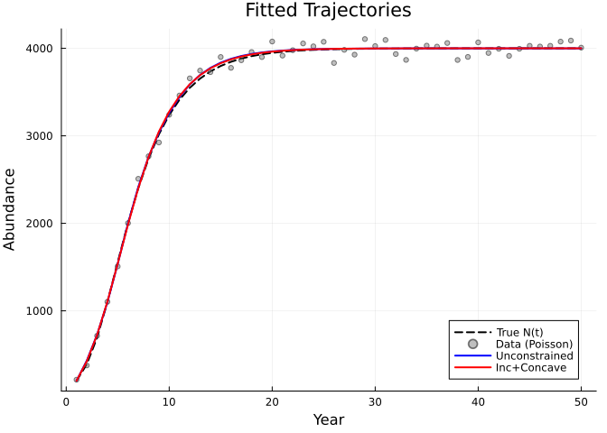
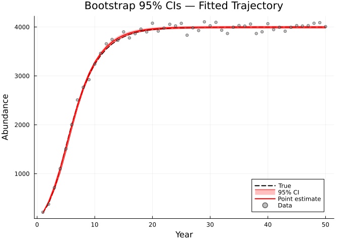
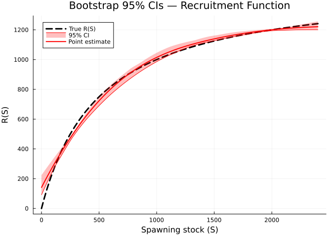
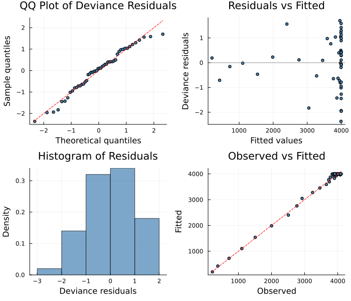
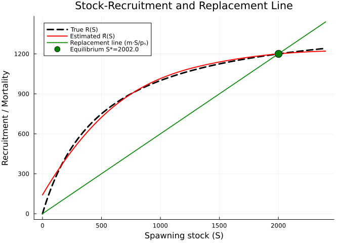

Fisheries Stock-Recruitment with Poisson Counts
Overview
In fisheries science, the stock-recruitment relationship $R(S)$ describes how the number of new recruits (young fish entering the population) depends on spawning stock biomass. This relationship is central to setting harvest quotas and estimating Maximum Sustainable Yield (MSY), yet its functional form is notoriously uncertain.
Classic parametric forms include:
| Model | Form | Behaviour |
|---|---|---|
| Beverton-Holt | $R(S) = \alpha S / (1 + S/K)$ | Compensatory (saturating) |
| Ricker | $R(S) = \alpha S \exp(-S/K)$ | Overcompensatory (domed) |
| Shepherd | $R(S) = \alpha S / (1 + (S/K)^\delta)$ | Flexible ($\delta$ controls shape) |
All assume a specific functional form a priori. A partially specified model instead treats $R(S)$ as an unknown function to be estimated from the data, subject only to biologically motivated shape constraints:
- Increasing: more spawners produce more recruits (at least initially)
- Concave: diminishing returns — recruitment saturates at high stock sizes
The constraint :inc_concave enforces both properties simultaneously, which is appropriate for compensatory stock-recruitment (Beverton-Holt type).
The observations here are Poisson-generated counts, as abundance data from survey or catch records typically are. The fits below nevertheless use a Gaussian likelihood: with counts in the hundreds the Gaussian approximation to the Poisson is close, and it keeps the focus of this vignette on the shape constraint. The Poisson family enters only at the diagnostic stage, where appraise(sol; family=Poisson()) computes deviance residuals appropriate to the counts. See the note at the end for what fitting a genuine Poisson likelihood would involve.
Setup
using PartiallySpecifiedModels
using PartiallySpecifiedModels: solve
using OrdinaryDiffEq
using Plots
using Statistics
using Random
Random.seed!(42)TaskLocalRNG()Synthetic Data
We generate data from a discrete-time population model with Beverton-Holt recruitment and Poisson-distributed observations.
True dynamics
The population model is:
\[N_{t+1} = R(S_t) + (1 - m) \, N_t\]
where $S_t = p_s \, N_t$ is the spawning stock (proportion $p_s = 0.5$ of adults spawn), $m = 0.3$ is the natural mortality rate, and the true recruitment function is Beverton-Holt:
\[R(S) = \frac{\alpha S}{1 + S/K}, \quad \alpha = 3.0, \; K = 500.0\]
α_true = 3.0
K_true = 500.0
m = 0.3
p_s = 0.5
R_true(S) = α_true * S / (1.0 + S / K_true)
n_years = 50
N_true = zeros(n_years)
N_true[1] = 200.0
for t in 1:(n_years - 1)
S = N_true[t] * p_s
N_true[t + 1] = R_true(S) + (1.0 - m) * N_true[t]
endPoisson observations
Fish abundance surveys produce integer counts. We observe population size as Poisson-distributed:
function _sample_pois(μ)
μ = max(μ, 0.01); c = 0; s = 0.0
while true; s -= log(rand()); s > μ && break; c += 1; end
Float64(c)
end
y_pois = _sample_pois.(N_true)50-element Vector{Float64}:
213.0
376.0
715.0
1103.0
1507.0
2002.0
2509.0
2767.0
2924.0
3241.0
⋮
3995.0
3914.0
3995.0
4029.0
4021.0
4029.0
4077.0
4089.0
4008.0
Population range: 200.0 – 4000.0
Spawning stock range: 100.0 – 2000.0
Observed count range: 213 – 4106
Mean count: 3506.0
Var/Mean ratio: 296.52 (≈1 only for a CONSTANT Poisson mean)Note that this variance-to-mean ratio is far above 1, and that is expected here rather than evidence against Poisson sampling. The ≈1 rule applies to repeated draws from a single Poisson mean. These counts are drawn from a mean that changes substantially over the series, so the marginal variance picks up the variation in the mean itself on top of the Poisson noise. Equidispersion would have to be assessed conditionally — from the residuals about the fitted mean, which is what the deviance-residual diagnostics later in this vignette do.
The PSM Model
We define a discrete-time dynamics function where the recruitment $R(S)$ is an unknown function to be estimated. The function signature for discrete models is f!(u_next, u, p, t) — it writes the next state into u_next.
function stock_recruit!(u_next, u, p, t)
N = u[1]
S = N * 0.5 # spawning stock
R = max(p.R(S), 0.0) # unknown recruitment function
u_next[1] = R + 0.7 * N # (1 - m) * N + R(S)
endstock_recruit! (generic function with 1 method)The spawning stock range determines the B-spline domain:
Spawning stock range: 100.0 – 2000.0
→ B-spline domain: (0.0, 2050.0)Unconstrained Fit
First, we fit with a standard (unconstrained) B-spline approximator using LAML with Gaussian likelihood. The initial values approximate a saturating curve matching the expected range of recruitment values.
S_max = maximum(N_true .* p_s) * 1.2
uf_unc = BSplineApproximator(:R, (0.0, S_max), 8;
initial=S -> α_true * S / (1 + S / (K_true * 1.5)))
prob_unc = PSMProblem(stock_recruit!, [200.0], (1.0, Float64(n_years)), [uf_unc];
data_times=Float64.(1:n_years),
data_values=reshape(y_pois, :, 1),
obs_to_state=[1],
known_params=NamedTuple(),
likelihood=PartiallySpecifiedModels.Gaussian(),
discrete=true)
sol_unc = solve(prob_unc, LAML(maxiters=200, verbose=false))
println("Unconstrained — Data loss: $(round(sol_unc.data_loss, sigdigits=4)), " *
"EDF: $(round(sol_unc.edf, digits=1))")Unconstrained — Data loss: 223100.0, EDF: 4.8Shape-Constrained Fit
Now we apply the :inc_concave constraint, which enforces that $R(S)$ is increasing and concave — biologically appropriate for Beverton-Holt type recruitment where more spawners produce more recruits but with diminishing returns (saturation).
uf_sc = ShapeConstrainedBSplineApproximator(:R, (0.0, S_max), 8, :inc_concave;
initial=200.0)
prob_sc = PSMProblem(stock_recruit!, [200.0], (1.0, Float64(n_years)), [uf_sc];
data_times=Float64.(1:n_years),
data_values=reshape(y_pois, :, 1),
obs_to_state=[1],
known_params=NamedTuple(),
likelihood=PartiallySpecifiedModels.Gaussian(),
discrete=true)
sol_sc = solve(prob_sc, LAML(maxiters=200, verbose=false))
println("Inc+Concave — Data loss: $(round(sol_sc.data_loss, sigdigits=4)), " *
"EDF: $(round(sol_sc.edf, digits=1))")┌ Warning: LAML: the objective converged but the parameters did not — one more PCLS step from the reported fit moves β by 0.582 (relative), above 0.001. The fit stopped on a flat ridge of the penalized objective: the fitted FUNCTIONS are usable, but individual coefficients and their covariance are not pinned. See `convergence.ridge` and `convergence.final_parameter_step`.
└ @ PartiallySpecifiedModels ~/Projects/psm/PartiallySpecifiedModels.jl/src/solver.jl:2174
Inc+Concave — Data loss: 227600.0, EDF: 4.1The constrained fit also reports convergence.ridge = true (the warning above): the penalized objective has converged, but one more penalized least-squares step from the reported coefficients would still move them appreciably. For a shape-constrained spline that is the expected geometry, not a failed fit. The constraints are imposed by reparameterising differences of the coefficients through an exponential, and wherever the fitted curve is nearly flat (for a saturating stock–recruitment curve, its high-stock asymptote) the corresponding transformed coefficients are driven towards $-\infty$, where the exponential is flat and the objective no longer pins them. The function is determined — that is what the recovery correlation measures — but individual coefficients and their covariance are not, which is why the bootstrap below, and not a coefficient-level covariance, is the right uncertainty statement for this fit.
Compare recovered R(S) curves
S_grid = range(0.0, S_max, length=200)
R_truth = [R_true(S) for S in S_grid]
R_unc = [sol_unc.unknown_functions[:R](S) for S in S_grid]
R_sc = [sol_sc.unknown_functions[:R](S) for S in S_grid]
cor_unc = round(cor(R_truth, R_unc), digits=3)
cor_sc = round(cor(R_truth, R_sc), digits=3)
p_R = plot(S_grid, R_truth, label="True R(S) — Beverton-Holt", lw=3,
color=:black, ls=:dash,
xlabel="Spawning stock (S)", ylabel="Recruitment R(S)",
title="Recovered Stock-Recruitment Function")
plot!(p_R, S_grid, R_unc, label="Unconstrained (r=$cor_unc)", lw=2, color=:blue)
plot!(p_R, S_grid, R_sc, label="Inc+Concave (r=$cor_sc)", lw=2, color=:red)
hline!(p_R, [α_true * K_true], ls=:dot, color=:gray, alpha=0.5,
label="Asymptote αK=$(α_true * K_true)")
p_R
Compare fitted trajectories
times = Float64.(1:n_years)
p_fit = plot(times, N_true, label="True N(t)", lw=2, color=:black, ls=:dash,
xlabel="Year", ylabel="Abundance", title="Fitted Trajectories")
scatter!(p_fit, times, y_pois, label="Data (Poisson)", ms=3, color=:gray, alpha=0.5)
plot!(p_fit, times, sol_unc.fitted_values[:, 1], label="Unconstrained", lw=2, color=:blue)
plot!(p_fit, times, sol_sc.fitted_values[:, 1], label="Inc+Concave", lw=2, color=:red)
p_fit
Stock-Recruitment Model — Comparison
────────────────────────────────────────────────────────────
Unconstrained: data_loss=223100.0, EDF=4.8, cor(R̂,R)=0.996
Inc+Concave: data_loss=227600.0, EDF=4.1, cor(R̂,R)=0.997The shape constraint produces a smoother, more biologically plausible curve at a slightly higher data loss and slightly fewer effective degrees of freedom. Note what it buys: despite fitting the observations less closely, the constrained curve correlates more strongly with the true recruitment function than the unconstrained one does. That is the constraint doing its job — the extra flexibility the unconstrained fit spends on the noise is flexibility spent moving away from the truth. Where prior knowledge about shape is genuinely correct, enforcing it can improve recovery of the underlying function even as it worsens the apparent fit to data.
Bootstrap Confidence Intervals
We compute parametric bootstrap confidence intervals on the shape-constrained fit. With method=:parametric and a Gaussian likelihood, each bootstrap replicate samples new data from $N(\hat\mu_t, \hat\sigma)$ and refits the model.
bs = bootstrap(sol_sc, prob_sc, LAML(maxiters=200, verbose=false);
nboot=50, method=:parametric, level=0.95, verbose=false)
println("Bootstrap: $(bs.n_success)/50 replicates converged")
println(" of which $(bs.n_smoothing_stalled) never advanced smoothing selection " *
"and $(bs.n_ridge) stopped on a flat ridge")┌ Warning: bootstrap: of 50 successful replicate fits, 0 never advanced smoothing selection (λ̂ left at its initialization) and 27 converged on a flat ridge (parameters unpinned). Their intervals inherit that. See `n_smoothing_stalled` / `n_ridge` on the result.
└ @ PartiallySpecifiedModels ~/Projects/psm/PartiallySpecifiedModels.jl/src/bootstrap.jl:542
Bootstrap: 50/50 replicates converged
of which 0 never advanced smoothing selection and 27 stopped on a flat ridgeTwo more counts are worth reading alongside n_success. A replicate can converge — the penalized objective stops changing — without the smoothing parameter ever moving off its initial value (n_smoothing_stalled), or with the coefficients still free to slide along a flat ridge of the objective (n_ridge; see convergence.ridge on a single fit). Neither makes the replicate unusable: its fitted function is a legitimate draw, which is what the confidence bands below are built from. But a large fraction of stalled replicates would mean the bands mostly reflect the initial smoothing, and a large fraction of ridge exits would mean coefficient-level summaries (as opposed to function-level ones) are not to be trusted. The package reports both in one aggregate warning rather than one warning per replicate — that is the warning printed above.
Trajectory confidence bands
p_ci = plot(times, N_true, label="True", lw=2, color=:black, ls=:dash,
xlabel="Year", ylabel="Abundance",
title="Bootstrap 95% CIs — Fitted Trajectory")
plot!(p_ci, times, bs.ci_fitted.lower[:, 1],
fillrange=bs.ci_fitted.upper[:, 1],
fillalpha=0.25, color=:red, label="95% CI")
plot!(p_ci, times, sol_sc.fitted_values[:, 1],
label="Point estimate", lw=2, color=:red)
scatter!(p_ci, times, y_pois, label="Data", ms=3, color=:gray, alpha=0.5)
p_ci
Recruitment function confidence bands
uf_grid_R = bs.uf_grid[:R]
R_truth_grid = [R_true(S) for S in uf_grid_R]
R_est_grid = [sol_sc.unknown_functions[:R](S) for S in uf_grid_R]
p_ci_R = plot(uf_grid_R, R_truth_grid, label="True R(S)", lw=3,
color=:black, ls=:dash,
xlabel="Spawning stock (S)", ylabel="R(S)",
title="Bootstrap 95% CIs — Recruitment Function")
plot!(p_ci_R, uf_grid_R, bs.ci_uf[:R].lower,
fillrange=bs.ci_uf[:R].upper,
fillalpha=0.25, color=:red, label="95% CI")
plot!(p_ci_R, uf_grid_R, R_est_grid,
label="Point estimate", lw=2, color=:red)
p_ci_R
The confidence bands show where the data are most informative (narrow bands) and where extrapolation uncertainty dominates (wide bands at the domain edges).
Diagnostic Plots
The appraise function produces standardised diagnostic quantities. For Poisson data, we pass family=Poisson() to compute deviance residuals rather than raw residuals:
using PartiallySpecifiedModels: appraise
diag = appraise(sol_sc)
p_qq = scatter(diag.qq_theoretical, diag.qq_sample,
xlabel="Theoretical quantiles", ylabel="Sample quantiles",
title="QQ Plot of Deviance Residuals", ms=3, legend=false, color=:steelblue)
mn, mx = extrema(vcat(diag.qq_theoretical, diag.qq_sample))
plot!(p_qq, [mn, mx], [mn, mx], color=:red, ls=:dash, label="")
p_rf = scatter(diag.fitted, diag.residuals,
xlabel="Fitted values", ylabel="Deviance residuals",
title="Residuals vs Fitted", ms=3, legend=false, color=:steelblue)
hline!(p_rf, [0], color=:gray, ls=:dot)
p_hist = histogram(diag.residuals, normalize=:pdf,
xlabel="Deviance residuals", ylabel="Density",
title="Histogram of Residuals", legend=false, color=:steelblue, alpha=0.7)
p_of = scatter(diag.observed, diag.fitted,
xlabel="Observed", ylabel="Fitted",
title="Observed vs Fitted", ms=3, legend=false, color=:steelblue)
mn2, mx2 = extrema(vcat(diag.observed, diag.fitted))
plot!(p_of, [mn2, mx2], [mn2, mx2], color=:red, ls=:dash, label="")
plot(p_qq, p_rf, p_hist, p_of, layout=(2, 2), size=(700, 600))
Durbin-Watson: 2.083For well-specified Poisson models, the deviance residuals should be approximately standard normal. Patterns in “Residuals vs Fitted” would suggest model misspecification or overdispersion.
Fisheries Management Implications
Maximum Sustainable Yield
The stock-recruitment curve directly informs harvest management. The replacement line $R(S) = m \cdot N = m \cdot S / p_s$ intersects the recruitment curve at the equilibrium spawning stock $S^*$:
replacement(S) = m * S / p_s
p_msy = plot(S_grid, R_truth, label="True R(S)", lw=3, color=:black, ls=:dash,
xlabel="Spawning stock (S)", ylabel="Recruitment / Mortality",
title="Stock-Recruitment and Replacement Line")
plot!(p_msy, S_grid, R_sc, label="Estimated R̂(S)", lw=2, color=:red)
plot!(p_msy, S_grid, [replacement(S) for S in S_grid],
label="Replacement line (m·S/pₛ)", lw=2, color=:green, ls=:dot)
# Mark equilibrium
S_eq_idx = argmin(abs.([R_true(S) - replacement(S) for S in S_grid[2:end]]))
S_eq = S_grid[S_eq_idx + 1]
scatter!(p_msy, [S_eq], [R_true(S_eq)], ms=8, color=:green,
label="Equilibrium S*=$(round(S_eq, digits=0))")
p_msy
Fisheries management summary:
Equilibrium spawning stock S* ≈ 2002.0
Equilibrium recruitment R(S*) ≈ 1200.0
Equilibrium population N* ≈ 4004.0
Key insight: the nonparametric R̂(S) recovers the shape of the
recruitment function without assuming Beverton-Holt, Ricker, or
any other parametric form — letting the data speak for themselves.Why nonparametric matters
Traditional fisheries stock assessment assumes a parametric form (typically Beverton-Holt or Ricker) and estimates 2–3 parameters. This can lead to:
- Model misspecification bias — if the true form doesn’t match
- Overconfident predictions — parametric CIs are too narrow when the model form is wrong
- Policy sensitivity — MSY estimates differ substantially between Beverton-Holt and Ricker
The PSM approach avoids these issues by estimating $R(S)$ nonparametrically while enforcing only the shape constraints that are biologically defensible (increasing, concave). The bootstrap CIs then properly reflect both estimation uncertainty and the flexibility of the nonparametric fit.
Summary
This vignette demonstrated:
| Feature | Implementation |
|---|---|
| Discrete-time model | DiscreteProblem with f!(u_next, u, p, t) |
| Poisson-generated counts, Gaussian fit | likelihood=PartiallySpecifiedModels.Gaussian() |
| Shape constraints | ShapeConstrainedBSplineApproximator(:R, ..., :inc_concave) |
| Bootstrap CIs | bootstrap(sol, prob, alg; nboot=50, method=:parametric) |
| Diagnostics | appraise(sol; family=Poisson()) for deviance residuals |
| Ecological application | Stock-recruitment, replacement line, MSY |
Key takeaways:
- The fits here use a Gaussian likelihood on Poisson-generated counts. That is defensible at these count magnitudes (hundreds), where the Gaussian approximation to the Poisson is good. It would not be defensible on small counts, where the Gaussian mis-states the mean-variance relationship and biases the fit. To fit the counts properly, pass
likelihood=PartiallySpecifiedModels.Poisson()toPSMProbleminstead ofGaussian();LAML’s penalized IRLS loop is family-generic and handles it, and the parametric bootstrap would then resample from the Poisson rather than the Gaussian. :inc_concaveshape constraints encode the biologically motivated assumption that recruitment is a saturating function of spawning stock, ruling out overcompensation (Ricker-type decline) while remaining flexible.- Parametric bootstrap — here resampling from the fitted Gaussian, matching the likelihood actually used — gives uncertainty quantification that accounts for both estimation noise and the flexibility of the nonparametric fit.
- Discrete-time dynamics are natural for annually-censused fish populations —
DiscreteProblemhandles this directly.